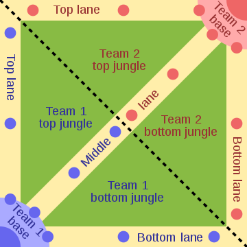

League of Legends er tölvuleikur sem Riot Games sér um og bjó til. Ég mun notast
við að kalla leikinn League, aðeins þægilegra. League kom til sögu árið í október 2009 og var því svo sannarlega
fagnað síðastliðinn október. League er einn af þeim leikum sem flokkast undir svokallaða
M.O.B.A. leiki eða Multiplayer Online Battle Arena.
Hverjir eru notendur leiksins?
Notendur League eru flestir þeirra, eins og með flesta tölvuleiki, karlmenn. Ég auðvitað geta allir
spilað þennan leik alveg sama hvaða kyn þeir eru.

League og Legends
Þessi leikur flokkast undir M.O.B.A. (Multiplayer Online Battle Arena) eða A.R.T.S (Action Real Time Stragegy).
Þeir leikir sem eru í þessum flokka eru allir svipaðir að þessu: Þú sem spilari stjórnar svokölluðum "champion"
sem hefur mismunandi "abilities" sem þinn "champion" getur gert. Spilarar eru fimm saman í liði
á móti öðru fimm manna liði og átt þú og þitt lið að taka niður "towers" sem eru varnarturnar sem verja
"Nexus" sem er það sem þarf að eyðileggja til þess að vinna. Borðið er sett saman af þremur "lanes" eða línum
og kallast þeir "top", "mid" og "bot". Inn á milli þessara línna er "jungle" sem er eins konar frumskógur
eins og nafnið segir. Þeir "champions" sem spila "top" eru oftast "tanky" eða "split-pushers". "Tanky" þýðir
það að það á að vera erfitt að drepa hann vegna þess að hann hefur mikið líf og mikinn armour (mikla brynju gegn líkams árás)/
eða mikið í magic resist sem ver hann gegn þeim sem notast við galdra. "Split-pushers" eru þeir champions sem geta
auðveldlega tekið niður turna einir og geta þá líka barist við og unnið tvo í hinu liðinu á þess að þrufa að fá hjálp.
Þeir sem spila "mid" eru oftast "mages" eða galdramenn sem notast við galdra og eru þeir oftast nær sterkastir í leiknum.
"Bot" línan er örlítið flóknari en "top" og "mid" þar sem að það eru tveir í hvoru liði þar að berjast. Einn þeirra
kallast "adc" eða "attack damage carry" sem þýðir það bara að hann sá öflugi í liðinu en hefur nánast ekkert líg og
þess vegna þarf hann "support"-inn sem er hinn aðilinn í línunni. "Supports" eru þeir sem hafa mikið
líf, mikinn armour og mikið magic resist en gera nánast engann skaða heldur eru þeir að hjálpa "adc" að
vinna sína línu. "Supports" mega líka flakka um og hjálpa örðum línum helst þá "jungle". "Jungle" er oftast
talið vera það næst erfiðasta á eftir "support", þar sem þú þarft að fylgjast með öllum línum til að sja hvort
þú getir gert eitthvað gagn þar, fylgjast með "camps" þar sem skrímslin í "jungle" eru, þú færð pening og XP fyrir
að dreap svoleiðis á móti "minions" sem línu menn fá að drepa. Einnig þarft þú að reyna að drepa sem flesta dreka
sem eru næst öflugasta skrímslið í "jungle" og eru þeir bara á vissum tímum í leiknum. Á eftir því í kringum 20 mínútur
kemur "Baron Nashor" skrímslið sem er það öflugasta í leiknum og það lið sem nær því fær "buff" sem gefur þeim kleift
að vinna nánast leikinn ef þeir spila rétt.
Vonandi var þetta ekki svo mikil steypa því næst ætla ég í framtíðarsýn leiksins og hvernig hann hefur þróast.